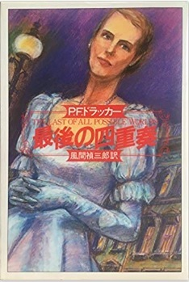

| 「人生の意味」を教えてくれるお薦めの名作 ピーター・ドラッカー編 最後の四重奏 | |
| 井戸深志 | |
| Plus One Publishing (2019) | |
井戸深志
社会生態学者を自ら名乗っている世界的に著名なピーター・ドラッカーがその生涯のうちに、小説を二冊ほど書き残していたことを多くの人達は知らない。私の場合も同様であったが、知人であるドラッカー学会に所属している大塚製薬工場㈱北村和敏氏から一昨年の秋にこの話を教えて頂きとても驚いた次第であった。そして、彼は私にこう言った。「これまでドラッカーの小説の書評を丁寧に書いた人はいないと思います。もし興味があれば書いてみたらどうでしょうか？ ドラッカー学会でドラッカーの小説の書評を取り上げるかもしれないですよ。」そう言われてから私も自分なりに少し調べてみたところ、やはりドラッカーの小説について丁寧に読み解かれた書評などは存在しないことがわかってきた。そこで、もしも私のようなものが世界で初めてドラッカーの書評を書けることになるならば、いや、世界で初めてではないとは思うが、ドラッカーの小説の書評を書けることは、とても光栄であり、とても嬉しいことであったために書くことに決めた。なぜなら、ドラッカーファンが喜んでくれるような気がしたからである。たとえ、私が好き勝手に本作品を読み解いたことであっても、ドラッカーファンにとって、本作品を読むきっかけができることになればとても嬉しいことだと考えたからだ。
さて、まず始めに、ピーター・ドラッカーが73歳でなぜ本作品を書いたのか？ ということについて考えてみたいと思う。ドラッカーが本作品を書いた時の年齢は73歳であり、その次の作品「善への誘惑」は75歳であった。この年齢でこのような小説を書いたこと自体、ものすごいエネルギーと情熱をもって生きていたことであり、本当に人間として素晴らしいと思う。そして、なによりこの時に小説を書いていた時の、ドラッカーの心理状態はどうだったのであろうか？と考えてしまうのである。つまり、ドラッカーの心の中で何がこれほどまでに突き動させた要因だったのだろうか？ と考えたのである。なぜなら、ドラッカーは、すでにこの年齢時には、世界的な地位や名誉を獲得していたにもかかわらず小説を書いた。必ずそこにはリスクも存在していたはずだ。しかし、それを超越して書き残したかった意思、思想が存在したわけである。なぜ、このようなことをしたのか？と考えると、おそらく、人は誰しも人生の晩年を迎えると、何度も自分の人生を振り返る習性があると言うことであろう。このことから、人が歳を重ねていくと思い出される記憶の多くは、幼少時代～思春期・青年期の時代｛両親と過ごした時の幼い時代の想い出や故郷のこと（兄弟や幼馴染、恋人と過ごした記憶も含む）｝が中心になっているわけであり、それらの記憶をモチーフの中の一つにして、今は亡き母国を時代背景として、記憶を辿り、思い出しながら書いていったのではないかと推察する。身近な表現で表すと、よく世間で言うところの自分史を作るということと同じではないかと思った。これらを理由とするならば、ドラッカーが小説を書くことなどは本業が作家であるためとても簡単だったことだと考えている。だからこそ、きっと本作品の中にはドラッカーの心の中にある、決して消せない色褪せない映像が本作品の中で沢山映し出されており、また、同時にこの時代背景は、ドラッカーの幼少時代から青年になる時代が中心となっていると考えている。したがって、全体に流れている時代背景には哀愁が漂っている。哀愁と言うのはオーストリア・ハンガリー帝国終焉期の時代風景を醸し出していることである。そのため、本作品を書いている時のドラッカーは、まるでタイムマシンに乗ったような気分で時代を懐かしく楽しく遡っていったであろう。まるで映画の『バック・ツゥ・ザ・フューチャー』の気分と同じだったかもしれない。おそらく、その時間を過ごすことは、きっと人生の晩年を迎えたドラッカーにとり、至極幸せな時間だったに違いない。
次に、本作品の面白さの一つであるが、本作品は物語の主人公となる人物が四人ほど各章にて取り上げられている。この四人の主人公のモデルと考えられる歴史上実在した人物（モデル）を私が推察をしてみたので【考察（４）】のところに書いた。きっと楽しんでいただける内容かと信じている。さらに、本作品の内容で心に強く印象が残った場面がある。その場面は、私がお薦めをしたいところであり、【考察（１）】のところに書いた。簡単に説明をするならば、現代の日本が超高齢化社会へ向かっていく時代になったことから、本作品の時代の中での夫婦関係が現代の夫婦関係において時代を超えて学べる場面が多々存在していると思ったからである。したがって、第四章「音楽に寄す」には、その要素が含まれていると思う。ヴァルト＝ライフニッツ男爵夫妻について夫婦が回想している場面などを読むと、超高齢者になった夫婦の関係は、こうあるべきなのか、とか考えさせられるのだ。したがって、50歳以上の夫婦ならば、ぜひ読んでみる価値はあると思う。「老夫婦になった時の夫婦の在り方」について考えさせられるだけでもそれは価値があることだと言えるのではないだろうか？人は誰でも若い時代に結婚をして子供が生まれ家族を作る。もしくは、子供が生まれない場合もある。さらに現代では、必ずしも結婚は異性とは限らない社会へと変わってきているが、いずれにしろ、人生のパートナーと若い時代から歳を積み重ねていった場合には、夫婦にとっては、目には見えない時間の重さが存在している。その重さを本作品の中の会話から読み取れる場面がここに沢山詰め込まれているからである。言い換えるならば、文章の一文字と一文字の合間には、積み重ねられた時間が存在しているのである。
最後に、本作品を最高に楽しく読むことができる読み方について考えてみた。できるならば、ぜひ読者諸兄には挑戦して頂きたいと願う。私がお薦めをしたい読み方は、まず始めに、本作品を読まれている読者諸兄は熱烈なるドラッカーファンか、もしくは、これまでほとんどドラッカーの作品を読んだことがない読者諸兄の両極端に分かれるものと考えている。もしも読者諸兄が熱烈なファンであるならば、私が提案する方法を試して頂きたいと思う。それは、ドラッカーファンであれば、本作品の中で様々な出来事が起こっている場面にこそ、その裏に隠されたドラッカーの名言があてはまる場面が多々あると考えている。つまり、言い換えれば、ドラッカーの珠玉の名言を本作品の場面の中でどれくらい当てはまることができるのか？ ということになる。たとえば、最近では、このような作り方で一番ベストセラーになった作品がある。それは、『もし高校野球の女子マネージャーがドラッカーの「マネジメント」を読んだら』であろう。映画にもなった作品を読者諸兄はご記憶されているのではないだろうか？ そこで、もしも、読者諸兄が、本作品の場面にドラッカーの名言を付け加えて、楽しみながら勉強を兼ねてご一読していただけたならば、ぜひその結果を教えて頂きたい。きっとドラッカーの新しい作品になるかもしれない。
もちろん、ドラッカーを読んだことがない読者諸兄には、一度ドラッカーの名言を集めた書籍があるので、それを参考書にして、このマッチングを楽しんで頂ければと願うばかりである。最後になるが、この本作品の存在を教えてくれた大塚製薬工場㈱北村和敏氏、また、すでに絶版となった小説を北村氏がドラッカー学会の理事がお持ちであることから、わざわざご紹介して頂き、快く小説を二冊貸して頂いたドラッカー学会理事花松甲貴氏（㈱日立総合経営研修所ラーニングセンター）に心より感謝を申し上げたい。また、いつもながらに、本作品の上梓にあたり編集をして頂いた㈲イープランニング須賀柾晶氏にも心より感謝申し上げる。最後の最後になるが、ピーター・ドラッカーの本作品が改めて読み直されるきっかけとなることを心より願う。
2019年3月3日
井戸深志
追記、私ごとで大変恐縮だが、私の作品の愛読者であり、同じ医薬品業界の大先輩でもあり、義母の弟でもあり、妻の叔父が4月2日にご逝去された。私にとりましては、言葉で言い表せないほど深厚なるご恩情を頂戴致した。これまで大変お世話になったこと衷心より御礼申し上げたい。

（著）P.F.ドラッカー 、 (訳)風間 禎三郎、ダイヤモンド社、1983年10月
①
本作品は、ドラッカーにとり初めての小説である。
②
本作品に出てくる主な登場人物は、オーストリア・ハンガリー帝国の歴史上の人物であり、それをモデルとしており、その史実をモチーフとして使っている。
③
各章ごとにエリートである主人公の人生を描いており、当時の社会構造は階級社会であ
る。また、その時代ごとの慣習も描かれている。（貴族社会）
④
各章の時代背景は、オーストリア・ハンガリー帝国終焉期へ向かっている。
⑤
第四章のタイトルである「音楽に寄す」はシューベルトの作品から取っている。
ちなみ、この作品はシューベルトが18歳の時に作曲したものである。
概略としては、19世紀終焉期のオーストリア・ハンガリー帝国時代を大きな背景にしており、その時代背景の中に四人の主人公の人生が絡みながら描かれた作品である。各章の主人公について簡単に説明をする。第一章では貴族でありながら外交官の道を歩んだソビエスキー大公について、第二章では銀行家でありながあら数学者でもあるヒントンについて、第三章では若手の銀行家としてその類まれなる才能とセンスから引き抜かれ、ロンドン＆ オーストリア銀行をさらに発展させることを企てているモーゼンタールについて、第四章では孫娘レナータの人生を祖母ヴァルト＝ライフニッツ男爵夫人（ラファエラ）の二枚の肖像画を通して第一次世界大戦後を生き抜くために、祖母の肖像画を売却しながら生き抜く姿を描いている。そして、この第四章では、特に二枚の肖像画に描かれたレナータの祖母であるヴァルト＝ライフニッツ男爵夫妻の姿が描かれているが、それは彼らの追憶の日々の回想であり、超高齢化社会の老夫婦の在り方を示しているとても素敵な場面である。ちなみに、私が考えるには、第四章の主人公とは、ヴァルト＝ライフニッツ男爵夫妻の姿が強く印象に残ってしまい主人公であると思っている。そのため、本作品の中において、四人の主人公と書いた場合には、以後このように理解して頂きたいと思う。本作品は、四人の主人公の人生が複雑にも交差しながら、また、ひとり一人の生き方や立場、価値観の違いもあり、さらに人間としての心の暖かさも垣間見えたりして、必ずしもドライに割り切っている人間関係でもなく、時代の大きな波に巻き込まれていくことから、いよいよ貴族社会の終焉期を迎えていくことを背景に、それぞれが一生懸命に生きていく姿を描いた作品である。
次に、各章について詳細に説明をする。
特に、第一章だが、小説からできるだけ多くの文章を引用しながら「あらすじ」を長く書いた。それは、先に述べたように、読者諸兄が、もしご興味があればドラッカーの珠玉の名言を第一章の場面の中で当てはめながら楽しんで頂きたいと考えたからである。ぜひ、我こそはドラッカー通であると考えていらっしゃる方、もしくは、ドラッカーの初心者だが名言を当てはめることで楽しみながら読んでみたいと考える方には、適度な長さにしてあるので挑戦していただければと願うばかりである。
第一章「ソビエスキー」であるが、物語は五つの章から成り立っている。始まりは、クロード・モネの新作を見ることで、これまで人生の中で二度しか味わったことのない至極の幸福感がソビエスキー大公の胸中にこみあげてきたことを思い出していた。一つ目の思い出は、20代だった時に、後に妻となった当時11歳の足長の少女との出会いだったこと、二つ目の思い出は、その数年後、30歳になる直前にフランス駐在外交官補時代にパリの愛人との間にできた私生の女児を見た時であった。そして、再びモネの絵の話に戻るが、イギリス駐在大使に任命された時にロンドンで購入した十八世紀の大邸宅の舞踏室で、いまでは執務室兼応接室にもなっている一階の「書斎」がある画架に立てかけられている。今朝の朝食はこのモネの新作を見るためにこの部屋でとることをソビエスキー大公は決めた。それは27年に及ぶロンドン生活では前例のないことだった。私設秘書のヴェグナーは広い書斎に立ちながら、毎朝報告事項の説明をしていたが、特にこの朝のソビエスキー大公は、いつになく快適だった。なぜこのように快適な一日と言う理由は、まず乗馬を二時間行うこと、次に銀行家のヒントンが2～3ヶ月前に紹介してくれたマッサージ師による治療のおかげで肩の痛みが何カ月ぶりに取れたこと。さらには、自身の思い付きで設立したボローニア醸造会社の株式市場での売り出しが大成功を収めたことで、数百ポンドも儲けることができたこと。そして、特に、このビジネスは、ロンドンのヒントン、ウィーンのモーゼンタールという二人の銀行家の懸念を排して実施したことであったが、大成功を収めたことであった。最後は、ホーン・アベイにいる妻のマルギットに電話を入れた時、このところ毎朝、不安があったが改善されていたことだった。妻の口調からは、まだ愛人のオーエン・リース・ネービスとの関係が上手く行っているようだった。ソビエスキー大公が一番恐れていることは、この情事がいつかは終わるということであった。なぜなら、その日が来たら、マルギットはソビエスキー大公を頼りにするに違いなかったからだ。
しかし、このような素晴らしく快適な朝も気分の重い朝に変えてしまった出来事が起こってしまった。それは、娘であるアンエリッタからの手紙であった。ソビエスキー大公は、まだじっくりと読んではいなかったが一抹の不安を覚えた。この不安からしばし忘れさせてくれることは外交官としての仕事であった。ヴェグナーからの報告が済めばアンエリッタの手紙を2、3時間かけて読み、検討し、分析し、その上で、どうするべきかを考えなければならない。外交官としての直観はすでに得ていたので一末の不安を感じたのである。そして、外交官としてのスキルは、一度読んだ書類は逐一記憶に留めておくように訓練されていたことから、不安を感じていたのだった。そして、いよいよソビエスキー大公は、メッテルニッヒ＝サンドールの教えに従って、まずは筆跡を確認した。
ソビエスキー大公／プシュミスル公爵
ヤン・カジミール九世殿下
イギリス駐在特命全権大使
オーストリア駐在＝ハンガリー大使館気付
ロンドン、イギリス
最後の地名はフランス語、それ以外は英語で書かれていた。封筒の隅には、HDS（アンエリッタ・デュギ・ソビエスキー）の頭文字と共に「親展」と言う注意書きがあり、これが私信であり勝手に開封してはならぬことをヴェグナー博士に無言のうちに警告していた。そして、手紙からの実際家アンエリッタからの相談は、夫ピエールの大使館付き武官ポストの依頼だったのであった。
アンエリッタはこう語るのである。これは名誉の問題であると言っている。つまり、ソビエスキー大公は、深い愛情と寛大な心から、アンエリッタを娘として認知したばかりか、ソビエスキーという名家の姓をツーロン出身の公証人の息子の苗字に付け加えること許したことから夫ピエールの出世に関しては名誉の問題と主張したのであった。こうして、ソビエスキー大公はこの手紙から1817年のパリ・コミューン当時を思い出してしまう。この事件は、プロイセン軍包囲下パリに残っていた外交官はソビエスキー大公だけだった。ちょうど見習いから一人前の外交官になった時期で、ソビエスキー大公がドイツの民間人数百人を大使館にかくまっていた。この時ソビエスキー大公は暴徒と相対してポーランド人として、フランスの友として退散を訴えていた。そして、その数週間後、フランス政府軍の正規軍がパリになだれ込み鎮圧したことからソビエスキー大公のその後の運命は、大きく変わったのであった。この出来事はパリに残っていたイギリスとアメリカの新聞記者たちにより大きく報道された。ドイツ人にとり、この報道は大受けになり、ドイツの老帝から直筆の感謝状を贈られたのであった。その数か月後に30歳でドイツの駐在を命ぜられ最高責任者ではなかったもの、大使として任務にあたることになった。その数年後、再度パリ・コミューンの行動が評価されてロンドン駐在を命じられた。これより先、権勢、名声ともに頂点を得ていたビスマルクがソビエスキーを招いて懇談することになった。それはパリ・コミューンの所見についてであった。
ソビエスキー大公曰く、近代戦争は敗戦国における礼節と社会の絆を引き裂く。また、社会的不穏は戦勝国にも伝播することを述べた。ビスマルクが深く感銘したことにより、イギリス首相ディズレーリーが外相ソールズベリー卿を伴って1878年のベルリン会議に出席した際、ビスマルクが両者にソビエスキー大公と会うことを薦めた。こうして、ソールズベリー卿がたまたま空席だったイギリス駐在大使のポストにソビエスキー大公を任命するようオーストリア政府に要請することになったのである。
ソビエスキー大公は、昨日のモネの新作の絵画を見たときに二度同じ幸福感を味わったことを思いだしていたが、それは間違いだったことに気がついた。実は三度あったと言うことをようやく思い出した。三度目とは、ヤイデルス老が社会への門出を祝福してくれた時であった。ヤイデルス老とは、ソビエスキー宮殿にいる資産管理責任者である老ユダヤ人である。ソビエスキー大公は16歳でウィーンへ送られ、イエズス会系の学校で学び、その後、自分の連隊であるソビエスキー甲騎兵隊で過ごし、1859年の対イタリア戦争に従軍した。そして、当時の貴族の通例で、ウィーン大学の有名教授連に個人的に師事し、法律、経済、哲学、歴史などを学んだ。
ところが、当時23歳のソビエスキー大公は宮殿に戻るとヤイデルスの弟子となり資産の管理の仕方を覚え、一家の資産内容に精通したいと父親に申し出た。当時としては前代未聞のことであった。宮殿に戻るとすぐに、ポーリンと出会い、相思相愛になり、ソビエスキー大公にとっては、その半生でもっとも幸せな3年間となった。その後、父親が落馬で突然亡くなり、当主となったとき、ヤイデルスはすべての準備をしていた。それはポーリンとの別れ、そして、外交官の道を薦めたのである。すでにヤイデルスは親戚であるフランス駐在オーストリア大使、メッテルニッヒ＝サンドール大公の私設秘書へ書面で連絡とり、サンドール大公が喜んでいとこであるソビエスキー大公、プシェミスル公爵を弟子ならびにパリ大使館における個人的補佐役として迎え入れる所存との返事を頂いていた。そして、このようなことをしてくれた老ユダヤ人が自分のことをいつも気にかけ、自分の中に肩書と制服ではなく一個の人間を見て、自分をいつくしんでいる唯一の老ユダヤ人に祝福を求めたのである。ソビエスキー大公はこの時、深く感動をした。これが三度目のことであった。
さらに、ヤイデルスから教えられた構想や原理を生かして、現在の資産は父親資産を受け継いだときの10倍になっていた。ヤイデルスは、これからは鉄道の時代が来ると今から30年前から主要都市で市街地を買収していた。いまでは、その土地だけでも当時の6倍となっていた。ヒントンとモーゼンタールがロンドン＆ オーストリア銀行設立案を携えて初めてソビエスキー大公の許を訪れた時、二人の申し入れに応ずる気にさせたのもヤイデルスだった。この投資はまれにみるほど有利な投資となった。ヤイデルスの構想力と先見力は、ヒントンをヨーロッパ随一の銀行家にのし上げていった。その後、雄大な構想力と先見力をもっていたのはソビエスキー大公だけだった。あとの人間は執行している日常業務だけに従事していた。一方、2～3週後には、ピエールの任官が発令される予定だ。そうしたら、早速、老帝に辞任の申し入れを行う予定である。
そういえば、昔ヤイデルスからこのようなことを言われていたことを思い出した。それは、後に妻となるマルギットとの初めての出会いのことである。ソビエスキー大公が新しい当主としての親戚周りをしていた時の話である。ヤイデルスの巡回予定表に「バラトン＝バラット大公夫妻は殿下に借金を申し込まれるはず。金額が確かで目的がはっきりしているならば応じられてはいかがでしょうか？また、貸付ということにはしないように。貸金がもどらないとき、殿下のお気持ちにしこりが残るだけですので。寄付と言うことに。その場合にも、掛金や飲み代になるだけので、手前に請求書を渡すように夫妻にご指示ください。」これはマルギットの学費をもつことを意味していた。その後、ソビエスキー大公はマルギットと結婚したのであったが、マルギットは、二人の男の子と一人の女の子を出産した。しかし、マルギットには高い学費を払ってパリ聖心学院を卒業したのにもかかわらず全くの無知な人間であった。そのかわり、噂という噂が集まってきていた。
ソビエスキー大公がイギリス駐在大使に任命されたときマルギットは三人目の子供を身ごもっていた。そして、同級生のヨゼファを雇うことになった。ヨゼファはマルギットにとり、パリ聖心女学院時代のただひとりの友人で、頭がよくてきれいであった。ハンガリー人特有の赤い髪、白亜のような肌、きらきらと輝く緑色の目だった。雇われてから間もなく、マルギットの公認でソビエスキー大公の寝室に入るようになり、ヨゼファはソビエスキー大公の子を身ごもった。ソビエスキー大公には理解できないことだがマルギットとヨゼファの間には、すべてのものを共有するような不思議な信頼関係があった。しかし、ソビエスキー大公とヨゼファとの関係はこれで終わってしまった。ヨゼファは大使館の護衛隊長と結婚することになった。それは、マルギットはヨゼファの二人で決めた。ヨゼファはその後もマルギットのもっとも親密な友人であった。ヨゼファの子供は女の子であった。女の子は、マルギットの実の子同然となり、ヨゼファはソビエンスキー大公がヨーロッパに出向いているとき、毎年ホーン・アベイを訪れ、マルギットのところに滞在した。そして、5年後にヨゼファの夫は亡くなった。マルギットは、まもなく、これまたやもめの年配の将校だったものと結婚させた。今度の夫は、すでに准将になっていた。
オーエン卿とマルギットの情事だが、すでに7年間も重ねていた。ソビエスキー大公と大公妃が久しい以前から、単なる法律上の夫婦、名ばかりの夫婦になっているのはロンドンの社交界で誰知らぬものがなかった。それをソビエスキー大公が暗黙に認めているのは、マルギットに対する愛ではなく、心遣いであり、思いやりであった。ソビエスキー大公は明らかにマルギットをいつくしんでいた。しかし、すでにオーエンはマルギットとの情事を上手く別れることを考えていた。マルギットを傷つけないように。このようなことを考えている状況のときに、極めて急を要するということで、サー・モンゴメリー・ブラットがオーエンへ面会を求めて訪問して来た。面会して話を聴くと、兄上であるカーディフ伯爵は、せいぜいあと2年、悪くするとあと1年もつかどうかとのことであった。この話を聴いているうちに、オーエンは、マルギットと別れる申し分のない口実ができたと思った。王家の家憲‐
これはかつての王族に嫁した貴族ならばヨーロッパの一般のイギリス娘よりも理解できるはずだからだ。
このとき、オーエンは気が付いた。本当に問題だったことは、ソビエスキー大公なのだということだ。そして、ソビエスキー大公にどうやってマルギットと別れたらよいのか、尋ねればよいのだと思った。きっとマルギットを傷つけないように考えてくれると思ったからだ。そして、オーエンは、急ぎ、大公邸への自動車を20分以内に用意することを召使いに頼んだ。一方、ソビエスキーは、「マルギットを傷つけるなんで」と繰り返していた。
ソビエスキー大公は、これまでのマルギットの数々の情事とは違ったものになると最初から気づいていた。なぜなら、ソビエスキー大公はオーエンに対して常に好感をもっていた。また、特別の好意を寄せていた。この好意という意味は、オーエンの祖父、父親とソビエスキー大公とはとても親しかった背景があったからだ。そして、マルギットとオーエンは、男女の関係を超えた特別な関係であると思っていた。二人は深く愛し合っていたのだ。と同時に、ソビエスキー大公とも親密な関係であり、信頼しきっていた。だからこそ、マルギットを傷つけるわけにはいかなかったと考えていた。ソビエスキー大公は、いままでの情事はすべてマルギットとから相手を袖にしていたが、今度はオーエンの方が嫌気をなし、マルギットを捨てるに違いないと思っていた。やはり年齢の差が大きい。オーエンの方がはるかに若いからだ。とすると、マルギットは、私を必要となるに違いないと予想していた。
ソビエスキー大公はこう考えていた。一つは、仮にアンリエッタの要望に応じて大使の任を辞任したら、マルギットの信頼を永遠に失うことなる。が、大使を辞任するつもりである。もしも好戦的なフランシス大公の取り巻きたちが、実権を握るようなことがあれば、大使の任を遂行するのを不可能にすることができる。しかし、ソビエスキー大公が心底唾棄している好戦派の政策の看板などにはなりたくないという気持ちをマルギットには分からないと思える。しかし、名誉とは何かとは分かるはずだ。このような政治的な状況で辞任した場合の方が、マルギットとオーエンに情事を中断させずに継続できるとも考えたりする。
とにかく、政治的なことが理由となることで、マルギットは非難の矛先をウィーンへ向けて、ソビエスキー大公を犠牲者とみなして同情するかもしれない。だが、二つの目の、もしもアンリエッタのために、辞任、その結果マルギットとオーエンが破綻したならば、マルギットは絶対にソビエスキー大公を許さないだろう。二度とソビエスキー大公を信用しない。ソビエスキー大公にとってアンリエッタは特別だった。マルギットを愛しんでいることはマルギット自身も知っている。なぜなら、昔アンリエッタがまだ6歳、7歳に過ぎないときに、マルギットは、本人を直接見たときから、マルギットはアンリエッタを憎み、アンリエッタと戦い、アンリエッタを恐れていたからだ。ということは、いずれピエールが大使館付き武官になれば、すぐにマルギットに知れる。マルギットは誰が橋渡しをしたのか気が付くに違いない。マルギットは自分よりアンリエッタの方を重んじたことにより、アンリエッタのためにマルギットを裏切ったと思ったらソビエスキー大公を絶対に許さないだろう。しかし、ソビエスキー大公は、すでに決断をしている。そもそもアンリエッタが生まれたときに、アンリエッタを幸せにする義務を背負っていた。それはアンエリッタに対する義務ではなく、自分自身に対する義務と考えて判断をしていた。
もしもマルギットが「愛する男」オーエンの将来のために、名誉のために、幸せにするために、己の幸せと青春と愛を投げうってロマンチックなヒロインを演じることができるならば解決策となるだろうと考えたのである。ソビエスキー大公は、この終わり方が、マルギットの『ゴルドーニ物語』には、年上の女性と若い男性の情事があったので、この結末を知っていたマルギットにとっては、気に入ると思っていた。以上は、情事の行方の落としどころで男性二人が気を使って悩んでいる場面である。本作品の最後の場面はこうだった。召使いが入ってきて、「閣下が、どうしても、ともうされますので」と名刺は、オーエン・リース・ネービス卿」であった。その下には一言「極めて重要な用件これにあり、ぜひとも5分間、お目通り賜り度し」を、だった。
第二章「ヒントン」の物語であるが六つの章から成り立っている。始まりは、ヒントンの妻の容体が悪化している場面だ。そして、そのヒントンだが、パンクロフトブラザーズの最高責任者となっているが、驚くなかれ、名誉会長の嫡男フレデリックバンクロフト卿がいる別荘において警察の手入れが行われたことの情報が入ったことから大混乱をしている状況だ。そもそもヒントンは、25年前大学の博士号をとっても就職ができずに異母兄からの紹介状でロンドンのオリバーパンクロスト卿を尋ねたのであった。ヒントンはオックスフォード大学では、オリバーパンクロフトと同級生であったこともあり、弟のデニスにも紹介され、その場で採用された。なぜ、義兄がバンクロフトブラザーズ社を紹介したのかと言う理由は、後にヒントンは理解できた。それはヒントンの亡き母には1800ポンドの遺産があったが亡き父に横取りされており、この事実から義兄はヒントンへの良心から紹介状を書いたのであった。これが最初の人生の転機であった。
次に人生の転機が訪れたのは、15～16年後に訪れた。それはメリッサ（後にヒントンの妻）、アーミステッド（パンクロフトブラザーズ社）、エレーン（オリバーパンクロフトの妻）が人生の不思議な目に見えない繋がりからロンドン＆ オーストリア銀行からパンクロフトブラザーズ社へ復帰することであった。
さて、後にヒントンの妻になるメリッサであるが、その出会いはキャバレーであった。メリッサの姉はアンナであり、黒人の姉妹であった。そして、メリッサがヒントンの子を妊娠した時、メリッサはヒントンに強くお願いをした。「産ませて。あなたの負担になるようなことはしない」と言った。
この当時、ヒントンが置かれた環境は、ウィーンでの生活が5年を過ぎロンドン＆ オーストリア銀行は経営基盤の確立をみて順調な収益コースを辿り始めていた。ヒントンは、メリッサが子供を産んだ時点でウィーンを去るつもりだった。なぜなら、第二の転機が訪れていたことを感じていたからだ。それはロンドンに国際工業銀行を設立して、その運営に当たることを考えていた。このタイミングで、現在のバンクロフト卿であり、フレディの父親であるデニスから電話が入った。それはロンドンで会うことの約束であった。現時点のヒントンは、すでにバンクロフト家とは疎遠となり、ほとんど縁が切れていた。バンクロフトブラザーズ社と言えば、会社のすべての運営を任されていたアーミステッドが自殺して、会社は破産状態に陥っていた。
この理由としては、デニスエレーン夫妻が、大物政治家として、かなり気取った生活をして散財していたからだ。ヒントンは、再会をして話を聴いていくうちに、5年前に自分を追い出したのは、エレーンだと気が付いた。そこで、ヒントンは、すでにバンクロフトブラザーズ社の置かれた状況から判断して、「お断りする」と言うことを決めたが、エレーンの言葉により、心を動かされた。「お願いマクレガー。私と子供を捨てないで。私とフレディを見殺しにしないで」と哀願された。これまでエレーンがヒントンのことを、姓ではなく、その名で呼んだことは一度もなかった。触れたこともなかった。ヒントンは心底動転感動して思わず「心配いりません。何とかなります。」と言った。ホテルに帰ると、メレッサが子供を産んだという知らせがあった。ヒントンは、同じ日、メリッサとの結婚を決断すると同時にバンクロフト一族の救出作業を引き受けることに腹を決めた。
そして、ヒントンは、5年たらずで再建をした。ヒントンは、バンクロフトブラザーズ社の大株主となった。この再建をヒントンが考えたことは、ヒントンは有名な「騎士トーゲンブルゴ」のトーンブルク役を演じていたのだと思い笑った。そして、ウィーンで出会った心理学の新理論「エディプス」がエレーン、メリッサ、亡くなった母親が年配の父親との結婚理由などのすべてでの出来事は、自分自身を仕向けるためだったことに気が付いたのだ。
つまりは、すべての出来事には同じ力が働いている。このことからも、ヒントンは実行させうる強制力、推進力が作用していたことを改めて自覚できた。
次に、本作品の中で語られているヒントンの人生であるが、簡単に言えば、ヒントンが成功をした理由は、人とのご縁やつながりを大切にしていたことであった。たとえば、大学時代にお世話になった大数学者ゲオルク・フリートリッヒ・リーマン教授の考え方を人生の基準として使い成功を収めたのである。リーマン教授はマントラは「問題を規定するな。集合を作れ」と言っていた。これを使用して世界を理解したからこそヒントンは同世代の誰よりも優れた銀行家として大成功した。但し、及ばない人達が二人だけいた。一人はニューヨークのJPモーガン、もう一人は故ベルリンのケオルク・ジーメンスであった。ヒントンの人生の中で最もベンチャーの中で成功をした会社は、30年前にウィーンのユリウス・フォン・モーゼンタールと共同で設立したロンドン＆ オーストリア銀行であった。
ヒントンが優れていたのは先見力が誰よりも卓越していたからだ。たとえば、JPモーガンへ話をした際には、「私達の世代は経済変動ばかりでなく社会変動も体験した。アメリカも後を追うように同じ道を歩んでいるように見えるが、ヨーロッパはすでに都市工業化社会に変わっている。農業社会から工業化前社会だった。」と述べた。また、ヒントンが生涯にわたり大切にしてきたマントラであるが、その取り組み方についても説明をしているところがある。たとえば「集合を構成する順序」はどのようになるのかと言うと、問題への自分の取り組み方（集合）において合致しないすべての現象を書き出すこと。とりわけ、異常現象、おかしな現象、同一の集合に属するとは思えないすべての現象を規定不可能な問題として書き出すことであった。このような取り組み方、思考回路にてあらゆる問題を解決していったのである。
ヒントンの人生の最初の大きな出会いと幸運は、学生時代に遡る。ヒントンはオックスフォード大学の学士号とゲッチンゲン大学の博士号をもってロンドンでパンクロフトブラザーズ社の面接を義兄の紹介で面接を受け、その場で採用された。オックスフォード大学時代には同級生であったオリバーパンクロフクトがいた。この出会いが人生の大きな分岐点となったが、後に、ソビエスキー大公との出会いも人生を大きく変えた出会いだったはずである。
第三章「モーゼンタール」では四つの章から成り立っている。
モーゼンタールは、ヒントンとロンドンで出会い、一緒にロンドン＆
オーストリア銀行を設立した。1906年には副社長になった。そして銀行を大きくするために、クラウバーを引き抜いた。さらにゴットフリント・ビエンシュトック博士（オーストリア局長）をスカウトした。そのため、名誉会長ソビエスキー大公、会長ヒントンの承認が必要だった。この二人で株式の半分を確保していた。モーゼンタールは、この銀行の将来を見据えて強力なトップチームを作り所有変更を考えていた。なぜなら、ヒントンは63歳、ソビエンスキー大公は68歳だったからだ。このようなことを考えているモーゼンタールには、先見力があった。つまりは戦略と道筋を詳細に考えて実行をしていく力があった。特に株式における戦略実行を考えたのであった。
一方、モーゼンタールの結婚までの出会いと子供たちのことも書いてあるが、娘のスザンナが数学と語学力に秀でていることから学校から子ども扱いされ、低能扱いにうんざりしており、精神状態が悪化していることをモール医師から聴いた。そのことで医師からは、解決策としては、家の歴史を書いてみること、また、スザンナをウィーンで一番厳しい女子専門の大学進学予備校に入れるように薦められた。また、両親には大人扱いをすることも含まれていた。このことから、家族の歴史を調べていくと不思議な繋がりがわかった。それはモーゼンタール家とソビエスキー家が17世紀半ばに母親の実家はスペイン、ポルトガルのソビエスキー一家も含めた東ヨーロッパの一部の貴族の財務代理人を務めたいたことであった。
第四章「音楽に寄す」では、六つの章から成り立っている。
レナータは祖母ヴァルト＝ライフニッツ男爵夫人の二枚の肖像画をやむを得ず売ることにした。人物が誰か絶対にあかさないと言うことを条件にしていた。
本作品の中の肖像画は、ダスタフ・クリムトの「音楽に寄す」とヴァルトミュラーの「恋する乙女」の二作品である。なぜこの肖像画を売却しなければならなかった理由は、第一次世界大戦後のオーストリアではインフレ、飢餓の恐怖におののいていたからである。この売却によってレナータは子供を連れてチューリッヒ湖畔の小さな家へ引っ越した。数年間は安定した生活を送ることができた。さらに、夫である画家エーリッヒ・コホウトの作品が世の中で認められて高値をつけ売却したことから昔のように金持ちになることができた。夫のコホウトは、第一次大戦後生きて戻ってきたがスペイン風邪であっけなく亡くなってしまった。
次に、ライフニッツ家の家系について語っていくと、レナータの母親は祖母を好いていなかった。それは祖母の両親のベツカッツ夫妻が男爵号を持ちキリスト教に出入りしていたもののユダヤ人だったからであった。したがって、レナータは祖母の誕生日に行われる記念演奏会に出席することが許されなかった。しかし、18歳の時に、レナータは出席した。その時、祖母に美術学校へ行きたいことを相談した後、こっそり試験を受けてパスしたが、画家になることなど母親に反対されることなので話を切り出せないことなどを打ち明けていた。祖母は心配はいらないと言った。祖母はその後もレナータへ助け船を何度も出した。レナータは文無しプロレタリア、武骨な画家エーリッヒ・コホウトと恋仲になった。結婚式の時、母親、姉たちは欠席した。父親は教会に来て婿へ引き渡して帰った。披露宴は欠席した。ソビエスキー甲騎隊にいた兄は電報があった。パーティが終わると祖母が言った「私の結婚祝いは、さっきあげたけどまだあげるものがある。あなたのおじいちゃんからの贈物よ」と言った。それは二枚の肖像画であった。キャンバスの上に祖母が書いた。「音楽に寄す」と「恋する乙女」という作品だった。
第一章ソビエスキー
①
アンリエッタ
②
マルギット
③
ヨゼファ
④
オーエン卿
⑤
ゴルドーニ物語
第二章ヒントン
①
パニック
②
フレディ・パンクロフト
③
リーマンのマントラ
④
ゲッチンゲン
⑤
エレーン
⑥
決断
第三章モーゼンタール
①
銀行家
②
シーラ
③
スージー
④
帰郷
第四章「音楽に寄す」
①
レナータ
②
ベルカッツ家の人々
③
アルツール
④
パウル
⑤
マリア
⑥
「音楽に寄す」
郷愁（過去）VS現代（現在）
個人の役割VS社会の役割
階級社会（貴族社会）VS民主主義
破壊VS創造
19世紀VS20世紀
本作品は、19世紀終焉期における貴族社会の文化を時代背景にしてその当時を生きた人間の姿を描いている。そして、本作品の中にドラッカーの思想・信念が凝縮されていると考えられる。しかしながら、本作品の読み方によっては、新しい発見ができる面白さがある。たとえば、それは老夫婦の会話である。第四章「音楽に寄す」の中には、いくつかの場面として描かれている。
このことは、視点を変えれば、ドラッカーは日本の将来を憂い、やがて日本が世界で最初に訪れる超高齢社会の中で老夫婦の在り方を示唆してくれたように考えてしまうのである。そんな風に勝手に思い込むことは、もしかすると私だけなのかもしれない。しかし、もし読者諸兄が本作品のすべてを最後まで読まなくても、この第四章だけでも読む価値はあると思うのである。この理由にあるのは、老夫婦になったとき、おしゃれな夫婦の会話ができることの素晴らしさを感じることができるからだ。きっと老夫婦の理想の会話とは、こうあるべきなのか？と強い刺激を受けてしまう。その会話の流れを箇条書きにまとめてみたので記載してみたい。本作品の中から選びだした会話と、また、私が強くインスパイアされたことを交えて会話の順番を書いてみたのでぜひご参考までにご一読願いたい。
①
初めて出会った時の二人それぞれの印象を語る。
②
お互いにどこが好きになったのか語る。
③
お付き合いした時に楽しかった思い出を語る。
④
プロポーズした時の気持ち、プロポーズされた時の気持ちを語る。
⑤
子供が生まれた時の気持ちを語る。（親になった気持ち）
⑥
倦怠期に入った時の気持ちを語る。
⑦
子供が成長して二人の時間が戻ってきた時の気持ちを語る。
⑧
老夫婦になった気持ちを語る。
⑨
二人で、もう一度一緒に何かを対等に始めることはできないか語る。
⑩
スキンシップをとることから感謝の気持ちを持つ。
⑪
来世でも再び会い一緒になることを願う。
本作品の底辺にはドラッカーが持っている人間への深い愛情を感じることができる。
それは四人の主人公の人生を描いた姿から読み取ることができる。
ドラッカーの根本的な考え方は、「人間社会とは、自律した社会が基盤である」と言うことだと考えている。本作品を読み解いていくと、この時代に生きた主人公たちは、社会的な役割を一生懸命に生きていたことを理解できる。なぜなら、彼らの人生には、山あり谷ありがあるからだ。たとえば、人生の苦難の時には、問題に耐えながら、解決する力を養い、最善を尽くしている。また、リスクに対しては、あらかじめ、多くの脅威を考えた上で数通りの解決策を準備しておく努力を惜しまないのである。したがって、社会的な役割と個人の役割を明確に理解していると思えるのである。
そして、もうひとつ人間には生まれついた運と言うものがあるが、その大きな運命とは、どの時代に生まれたのかということに大きく左右される。つまり、人間の力ではどうにもならない時代の流れというものがあり、個人の力ではどうにもならないものである。本作品の中で見ると、第一次世界大戦までの流れとは、貴族社会とオーストリア・ハンガリー帝国の崩壊へと繋がっていることである。
このようなことから、その時代を生きる人間にとっては、時代を読むことの大切さを学ぶことができる。そして、このことを書き残してくれたドラッカーは、やはり人間への深い愛情に満ち溢れていると考えられる。
さらに、もう一つの視点から見ると、本作品の中の主人公たちは、時代のエリート、上流階級であり、生まれた環境、育った環境、学歴などは輝かしい経歴の持ち主たちである。
このような彼らの人生は、様々な人達と出会い、関わった人達と信頼を構築して、ビジネスを大成功させたサクセスストリーとしても読むことができる。
ちなみに、このビジネスの成功の要因となったことは、先見力ということになるが、先見力と同時に、重要なことは、力のある上流階級の人達とのお付き合いから信頼される人間性があるのかと言うことに尽きると考える。特に、ビジネスが成長していくと言うことは、人との出会いに大きく依存している。人をご紹介して頂けるだけでも、紹介された人には目に見えない保証が与えられているということになる。
このことから、ビジネス的な視点で考えれば、紹介されるということは、紹介者から信頼されているということになるが、親しくなるまでの時間を短縮できるというメリットにもなるわけである。このように、信頼した人を自らが人を紹介すると言うのは、これも愛情の中の一つではないかと考えてしまうのである。
つまり、単純に考えるならば、信頼＝愛情ということになると思うのだが、これは私だけが考えていることなのかもしれない。
なぜ、私がそのように考えてしまうのかと申し上げると、そもそも自らが信頼を得ている人物に人を紹介すると言うことは、愛情がなければ、紹介などしないと考えるわけである。そこには、紹介した人のために、何か役に立ちたいと言うことが前提にあるからと考えているわけであり、それを大きな愛情と言えないのだろうか？ と考えたからである。
最後に、第四章の中の家族愛ということについて考えてみると、もし家族内で大きな問題がある時、家族の誰かの援助があればそれを突破できるということを本作品の中では描いている。その場面を本作品の中で見ると、レナータと祖母ヴァルト・ライフニッツ男爵夫人（ラファエラ）の関係を見れば理解できる。
つまり、上記の場合から学べることは、家族の中で、たとえば、2/3以上が反対だとしても、ただ一人の家族が、自分のやりたいことを理解してサポートしてくれたならば、道は開けていき、前進できるということである。もちろん、そのために本人は、大きな苦労を伴いながらも、そういう苦労は自分の進みたい道へ進むことができることから、より頑張る大きな動機へと繋がっていくものだろう。このような場面を見ると、特に、夫婦、両親、兄弟、祖父母からの無償の愛によるサポートを受けていく人達は、きっと世の中には沢山存在しているものと思われる。これこそが、家族の絆と言える場面でもあろう。サポートする家族は、何も見返りなどは求めない無償の愛を提供しているからだ。このようなことができるのは、家族だからこそ可能としている。このような場面を書いたドラッカーの人間性の中には、常に家族の絆、愛情を中心にして、もっと大きな人間愛をもった人物だと推察した。
本作品に書かれている芸術・学問はすべてドラッカーが幼い頃から学んだことが描かれていると考えられる。たとえば、本作品には、著名な画家の作品がなぜ使われているのか？ と考えてみると、これは「本作品の特徴② 」で述べたことであるが、本作品のモチーフとして実在に存在した画家の人生や作品名を取り上げていることから、これはドラッカーが仕掛けたトリックであると考えている。そして、このトリックは、決して芸術家だけではなく、オーストリア・ハンガリー帝国における歴史上著名な人物の出来事なども含まれている。
たとえば、本作品の中で、主人公である四人は誰をモデルにしたのか？などを、調べて推察してみた。【考察（４）】の所に詳細に書いたので、ぜひご一読願いたい。
きっと読者諸兄にとっては、とても面白く読めるものと信じている。
そして、先ほどにも述べたが、本作品に出てくる主人公達や芸術家達は、オーストリア・ハンガリー帝国の成立した1867年5月29日から崩壊した1918年10月31日までの期間に実在した人間をモデルとしている。このようにドラッカーが仕掛けたトリックのモデルを知ることは、ドラッカーがいかに上流階級で育ち教育を受けてきたのか、よく理解できると思われる。ちなみに、19世紀とは、1801年1月1日～1900年12月31日、20世紀とは、1901年1月1日～2000年12月31日である。
次に、第一章と第四章の始まりに共通している言葉がある。それは「絵画」が、使われていることである。そして、本作品に使われている絵画について推察してみた。
それは、たとえば、本作品の第一章ではモネの絵画から話が展開しているが、なぜモネの絵画を使っているのか、その理由について考えてみた。おそらく、ドラッカーが大人へと成長していく過程の中で、著名の画家の作品と出会ったのではないかと推察してみた。さもなければ、ドラッカーが好きな画家だったために本作品の中で使用されたのかもしれないと思った。いずれにしろ、芸術と馴染みがなければ、具体的には書けないわけであり、このような芸術に関する知識を持たれているということは、教養を持っているということである。
また、第四章では画家は歴史上においては実存した画家の名前を使っているが、その画家の作品名は架空なものとなっている。そこで、実在した画家二人について調べてみると、ひとりは、歴史上に実在したダスタフ・クリムトであるが、本作品中で使われている架空の作品名は「音楽に寄す」である。もうひとりは、実在したヴァルトミュラーであるが、本作品中で使われた架空の作品名は「恋する乙女の肖像」であった。そして、この中で実在したクリムトの実際の出来事を本作品の中では、モチーフとして実際に使っている場合がある。
その説明の前に、本作品の中でクリムトは、架空の作品「音楽に寄す」を描いたことになっているが、この作品名「音楽に寄す」は、シューベルトの楽曲「音楽に寄す」から使用したものだと推察している。ちなみに、この作品は1817年に作曲された歌曲である。内容は、音楽の素晴らしさを讃え、感謝の意を歌っている。
それでは、話は戻るが、実在したクリムトは、唯一、一人の女性を二度描いた作品がある。しかし、本作品の中では、一人の女性が違う画家により二度描いてもらったという作品で設定をしている。このように些細なことを紐解いていくと、歴史上の人物の出来事（史実）を本作品の中では架空の出来事として使用していると考えられた。つまり、本作品の主人公として描かれている四人は、オーストリア・ハンガリー帝国における歴史上の人物の人生をモチーフ（史実）にしている。
ここで主人公のモデルとなった歴史上の人物を調べてみた。四人の主人公に関しては、それらしき候補者が見つかった。しかし、一つの疑問にぶつかってしまった。それは、なぜドラッカーは、歴史上の人物を取り上げたのか？ と言うことであった。これは、あくまで推察となるが、それだけ、ドラッカーは母国に対して強い郷愁と哀愁を感じていたということではないだろうか、と考えてみた。理由としては、幼い頃から学んだ母国を代表する人物のことについては、幼い頃から国家の教育方針で教育された身であるわけで生涯忘れることはないと思うからである。だからこそ、歴史上に名を遺した母国の偉大な人物への敬意を含めて本作品の中にドラッカーの思いを投影したのではないだろうか、と考えるのである。
次に、先に書いたが、本作品の中においては、同じ女性が二度も絵画のモデルとなっている作品があると述べた。これについて詳しく記載しておきたい。本作品の中では、一人の女性が、二度もモデルとして描かれており、作品ごとに画家は違っている。これを史実から見ると、確かに実在したクリムトの場合は、同じ女性を二度描いている。それらの作品は、1907年に制作された『アデーレ・ブロッホ＝バウアーの肖像Ⅰ
』、また、1912年に制作された『アデーレ・ブロッホ＝バウアーの肖像Ⅱ
』であった。この作品は、現代ではウィーンのユーゲント・シュティール（世紀末芸術）を代表する作品と言われている。
また、ご参考にして頂きたいのだが、このモデルとなった女性の父親はユダヤ系銀行家モーリッツ・バウアー、そして同じユダヤ系製糖工場の所有主フェルディナント・ブロッホと結婚したが、この夫婦はブロッホ＝バウアーと複合姓を名乗ったのであった。（参照：Wikipedia/アデーレ・ブロッホ＝バウアーより）
簡単にダスタフ・クリムトの生涯について簡単に調べてみたので記載しておく。ダスタフ・クリムト（参照：Wikipediaより）を調べてみると世紀末ウィーンを代表する帝政オーストリアの画家であり、1862年ウィーン郊外のバウムガルテンにて生まれている。父親はポヘミア出身の彫刻師であった。七人兄弟の第二子であり、1867年に博物館付属工芸学校に入学、工芸学校で石膏像のデッサンや古典作品の模写を中心とした古典主義的な教育を受けた。ちなみに、弟のエルンスト・クリムトとゲオルク・クリムトも同じ学校で学び、彫刻師、彫金師となり、クリムトの作品を飾る額の設計を行っている。
1879年にクリムトは弟のエルンスト、友人のフランツ・マッチュと共に美術やデザインの請負を始め芸術家商会を設立した。1886年から1888年まではウィーンのリングシュトラーセ（リンク大通り）に建てられたブルク劇場の装飾を行い、金功労十字章授与した。また、1888年に制作した『旧ブルク劇場の観客席』で第一回皇帝賞を受賞した。すでに装飾家としての名声を受けていたクリムトは1984年ウィーン大学大講堂の天井画の制作を依頼された。『哲学』、『医学』、『法学』であったが、論争を呼んだ。この三枚の絵は、のちに、ナチスによって没収され、1945年インメンドルフ城にいて、親衛が撤退する際の放火により、没収された他の作品と共に焼失した。白黒写真および『医学』の習作が現存している。1897年、保守的なクンストラーハウス（美術家組合）を嫌った芸術家たちによりウィーン分離派が結成され、クリムトが初代会長となった1902年第14回分離派・にて大作『ベートヴェン・フリーズ』を出品したが反感を買った。長年行方不明となっていたが、1970年にオーストリア政府により買い上げられて修復をうけ、現在ではセセッション館（分離派会館）に展示されている。
その後、1903年第18回分離派展では、『人生は戦いなり（黄金の騎士）』（10903、愛知県美術館蔵）1905年に分離派を脱退し翌年オーストリア芸術家連盟を結成した。作風は、女性の裸体、妊婦、セックスなどで官能的である。甘美で妖艶なエロスと同時に常に死の香りが漂っている。「ファム・ファタル」（宿命の女）というテーマは多用されている。さらに『接吻』に代表される作品などには、金箔が多用されている。クリムトは1900年分離派会館で開かれたジャポニズム展は、分離派とジャポニズムの接近を象徴するものであり、同時代の芸術家同様、浮世絵や琳派から影響を受けている。
代表作は、『ユディト』、『ベートヴェンフレーズ』、『マルガレーテ・ストンボロ＝ウィトゲンシュタインの肖像』、『アデーレ・ブロッホ＝バウアーの肖像』、『接吻』、『ダエナ』などである。
ヴァルトミュラー（参照：Wikipediaより）について記載しておく。正式には、フェルディナント・ゲオルク・ヴァルトミュラーである。1793年に神聖ローマ帝国ウィーンで生まれた。肖像画、風景画を得意としている。 なぜなら、この時代の芸術家は貴族に雇われていたため、このような絵で生活を営んでいたのである。時代的に芸術家は貴族に雇われていた時代であった。そして、それではなぜこの肖像画がこの時代の貴族社会で流行をしたのかと申し上げると、時は遡るが、1814年から1815年にかけてウィーン会議が行われ肖像画を得意とするイギリスの宮廷画家トーマス・ローレンスがウィーンにやってきたのを契機としてオーストリア貴族にも肖像画の需要が生まれ活躍をしたことによる。特に、1823年に描いたベートヴェンの肖像画は、非常に有名な作品と言われている。1827年オーストリア皇帝フランツ1世の肖像画を依頼されたことにより貴族より多くの依頼をされたのは、このような背景があったからである。このようにドラッカーは、オーストリア・ハンガリー帝国時代から歴史上の画家として著名であったクリムトとヴァルトミュラーが肖像画を描いたと画家として本作品に中で登場させた。いずれにしろ、ウィーンを舞台にした実在した人物が本作品の中で書かれることは、これまでドラッカーが学んできた芸術世界の蓄積された教養がなければ描くことさえもできないことを十分に理解できる。
本作品の時代背景はオーストリア・ハンガリー帝国時代である。そのために実在した人物がおり、その人物の職種、エピソードなどをモデルとしていると先に書いた。つまり、言い換えれば、本作品は、フィクションではあるが、できるだけノンフィクションに近づけたいと言うドラッカーの思いを感じるのである。したがって、モチーフとなった人物の職種や出来事は歴史上の史実を取り上げて書いている。
・モーゼンタールのモデルとは
たとえば、第三章モーゼンタールは、銀行家である。なぜ、本作品には銀行家がこれほどまでに、出てきているのかと言う視点か考えると、当時ユダヤ人は銀行家として成功をしている人達が多かったこともあるが、職業が限定されていたということも考えられる。
また、私が過去読んだ本の中で、ユダヤ人の歴史を語っている作品がある。この作品は佐藤優氏が中村うさぎ氏との対談『聖書を読む』と言う作品である。この中で書かれている内容から、なぜこの時代のユダヤ人には商人が多いのかということが理解できるので記載しておく。
「すなわち、人間というのはなかなか積極的な理由では団結できない。何かに対抗する形で団結するものある。したがって、常にいじめが必要になるということになってしまう。
また、視点を変えれば、ユダヤ人の共同体には土地をもたせない。都市のゲットーなどに閉じ込めて商業活動に従事させる。商業活動というのは、実は共同体を壊す機能がある。なぜなら、貨幣には身分が関係ないから。貨幣経済が発達すると身分制は壊れる。だから、社会の中に入れず、周辺に置こうとする。日本でも士農工商の一番下に「商」が置かれているのは、そういうことである。身分的には低いが彼らはお金をもっている。彼らがいるから我々は貧しくなるということになるという構図が団結するためには必要だった。」（以下引用した。文庫本：聖書を読む、著者：佐藤優・中村うさぎ、2016年2月10日、文芸春秋）。
ゲットー（ghetto）とは、日本人には分かりづらい歴史であるので参考までに記載する。ヨーロッパ諸都市市内でユダヤ人が強制的に住まわれた居住区のことを意味する。
以上を読むと、単純に構図を理解できる。つまり、商人という立ち位置は、身分的には低いからこそ、お金を稼ぎ団結して組織で力を発揮していくという生き方に繋がっているである。以上のことから、ユダヤ人には商人としての銀行家が多かった理由は、銀行家も商人という位置づけにあると言うことであろう。
さらに、この時代は、貴族社会（階級社会の時代）であったので、差別に対して団結して戦っていく必要があったと考える。このようなことから、話がさらに一気にステップアップをしてしまうが、第三章モーゼンタールの職種から実在した人物を推察するならば、ウィーンの銀行家で実業家のフェルディナント・ブロッホ＝バウアーを推察した。ちなみに、フェルディナントは製糖業で富を得た裕福な実業家であった。（参照：Wikipedia：アデーレ・ブロッホ＝バウアーより参照）
・ヴァルト＝ライフニッツ家のモデルとは
本作品の第四章では、ヴァルト＝ライフニッツ家が描かれているが、この家のモデルとなったのは、おそらくカール・ヴィトゲンシュタイン家ではないかと推察している。この理由となるものは、まず始めに、クリムトが本作品の中では、レナータの祖母であるヴァルト＝ライフニッツ男爵夫人（ラファエラ）の肖像画を描いているということだ。この絵は、すでに述べた「音楽に寄す」である。しかし、ここで重要なことは、実際に実在したクリムトは女性の肖像画を描いたという事実である。そこで、カール・ヴィトゲンシュタイン家の中で、実際には女性の肖像画を描いたことがあるのかについて調べてみると、確かにクリムトは女性の肖像画を描いていた。それは、長女ヘルミーネ『ソニア・クニップスの肖像』と次女マルガレーテ『マルガレーテ・ストンボロ＝ヴィトゲンシュタインの肖像』である。しかも、このカール・ヴィトゲンシュタインは、鉄と鉱山を扱う大富豪であり、クリムト最大のパトロンでもある。以上のようなことから、実在した人物をモデルとしたのは、カール・ヴィトゲンシュタイン家と推察した。
ちなみに、マルガレーテの肖像画であるが、父親が結婚する娘のために記念としてクリムトに制作を依頼したものであるが、マルガレーテはどうしても気にいらないことで有名となった。たとえば、クリムトも何度か修繕したが、最終的にやはり気に入らないマルガレーテは、夏の家（別荘）のある部屋にしまい込んでしまった言うエピソードがある。この絵に拘る凄さを感じるところである。このようなことがあったこととは関係はないだろうが、後に、1920年代にマルガレーテは、ウィーン工芸美術協会の会長になった。このことから推測されることは、マルガレータの芸術に対する知識はかなりものがあり、きっと評価できるほどに芸術に対する造詣の深さを持っていたのだろうと推察した。
さらに、このマルガレーテの肖像画にてマルガレーテが着ていた衣装はクリムトの愛人であったエミーリエ・フレーゲがデザインしたと言われている。この実在したエミーリエは、第三章モーゼンタールに出てくるシーラのモチーフとなったと推察される。本作品の中のシーラとモーゼンタールとの出会いはベンソンの服飾品専門店であり、その10日後には二人は恋愛関係になったと書いてある。しかも、その後モーゼンタールのサポートによりロンドンには「シーラ小間物店」が29店舗できたのである。シーラは金持ちになり、「ビジネス帝国を築いた最初の女性」として大衆紙のスターとなったのであった。このように現実の世界でビジネスを成功させたエミーリエ・フレーゲこそがシーラのモデルとなったと推察した。
・ヒントンのモデルとは
第二章ヒントンのモデルと考えられる人物であるが、オーストリア・ハンガリー帝国時代に生まれた数学者から調べてみると、二人の候補者が見つかった。一人は、ジョン・フォン・ノイマンである。もう一人は、クルト・ゲーデルであるが、結論から申し上げて、本作品にモデルとなった人物は誰かと推察すると、結果は、クルトデーデルではないかと考えた。この理由となることは、まずひとつとしては、本作品に出てくるヒントンはユダヤ人ではないということである。二つ目には、本作品の中で、ヒントンは大学時代に学んだマントラを仕事においての判断する基準に使っていたことである。クルト・ゲーデルは世の中で何を成し遂げた為に著名なったのかと言うと、「不完全性定理」を説いたわけである。簡単に説明をすると、数学の正しさを数学では証明できないと言うことである。さらに、ゲーデル哲学信条というものがあり、これに相当するものが、もしかすると、本作品の中に出てくるヒントンのマントラに近いのではないかと推察した。
・ソビエスキーのモデルとは
本作品の本当の意味の主人公である第一章ソビエスキーのモデルとなった人物を推察してみた。これは、ハインリヒクーデンホーフ＝カレルギーではないかと考えた。
その理由としては、まず始めに、オーストリア・ハンガリー帝国において、伯爵、外交官であった。二つ目は、ドラッカーが日本を大好きであったことから、日本へ行ったことがある外交官を選らんだのではないかと考えてみた。ここについて、さらに調べてみるとハインリヒクーデンホーフは1892年2月、日本に代理公使として着任していた。その後、日本人女性（青山みつ）と結婚をした。この結婚は、日本では、初めての正式な国際結婚と言われている。三つ目には、ハインリヒクーデンホーフ家は、ボヘミアとハンガリーに広大な領地をもつ伯爵家である。本作品のソビエスキー家も広大な領土を管理しているところから、共通点があった。以上のことから、第一章ソビエスキーのモデルとなった人物は、ハインリヒクーデンホーフ＝カレルギーと推察した。
本作品の四重奏とは、日本語訳のタイトルであるが、この日本語訳に拘って少し解釈を加えていきたいと考える。本作品の時代背景から考えると、自然に流れる音楽は、言うまでもなく、クラッシックが主流であり、しかも芸術家と呼ばれる人たちにとり、貴族がパトロンとなっていた時代である。そのため、本作品のタイトルである『最後の四重奏』は、どの楽器による四重奏を想像するのかということを考えてみた。おそらく、それはヴァイオリンなど弦楽器を中心とした弦楽四重奏を想像させるだろう。なぜなら、特にヴァイオリンの音色は人の心を揺さぶる楽器である。すでにご存じかと思うが、通常、四重奏という合奏形態は、主に二本のヴァイオリンが華やかな主旋律を演奏、一本のヴィオラ、チェロがリズム隊の役割となっている。本作品のタイトルが四重奏と名付けてあることから、誰がどの楽器を担当しているのか考えてみると、本作品の主旋律を演奏しているのは、やはり、第一章ソビエスキーと第二章ヒントンであり、彼らは、ヴァイオリンの担当である。第三章モーゼンタールはヴィオラであり、第四章ライフニッツ男爵夫人と孫娘は、チェロの担当と考える。つまり、本作品の四重奏をする演奏者はこの四人でアンサンブルをしているのである。
次に、弦楽四重奏と言えば、ハイドンが有名であり、68曲を残している。彼は「弦楽四重奏の父」と呼ばれている。モーツァルトは『ハイドン・セット』を2年かけて残している。（参照：Wikipediaより）本作品の中に出てくる主人公の四人は、自らの人生をそれぞれの楽器を通して音色を出し演奏をしていると考えられるが、その音色は一人ひとり彼らの人生であり、その人生の音色をもってアンサンブルをしているのである。そこで、私がもう少し興味をもって調べたいことがあった。それは、主人公である四人が奏でる演奏曲の譜面とはいったいどんな譜面なのか？ ということである。ここからさらに、私の勝手な想像で書いてしまい大変申し訳ないが、本作品全体には郷愁と哀愁が漂っていることから、ノスタルジーな曲であると考えてしまうのである。つまり、この譜面は短調で、かなり心に響く泣きの曲ではないかというイメージを持ってしまった。さらに、サビのところでは、転調をして、明るい雰囲気を醸し出している可能性も考えられた。テンポであるが、このあとのバンド演奏のところに詳細に書いてあるが、時代背景から考えてみると、最初はゆっくりとしたテンポで始まり、転調をしたあたりから、アップテンポに変わっていくような気がしてならない。時代の変化をアップテンポにすることで表現していると考えたからである。
次に、ここからはバンド演奏の場合とした時の視点で考えてみたいと思う。バンド編成となるので、まずは基本となるリズム隊で考えてみる。
・ドラマー候補について
ドラムであるが、本作品の底辺に流れている一定のリズムであるが、19世紀終焉期におけるオーストリア・ハンガリー帝国、つまりハプスブルス家と貴族社会と言う時代背景がリズムになると考えている。そのテンポは、世の中が平和で安定した時代ならば、ゆっくりとした一定のテンポから始まるが、貴族社会の終焉期に向かっていくと時代が不安定となっていく。このときには、テンポは、少しずつアップテンポへ変わっていく。この明確な理由となるのは、貴族社会が崩壊していくことを現わしている。ドラマーは誰になるのかと考えてみた。やはり、どう考えても、第一章の主人公であるソビエスキー大公と考えられた。この理由は、そもそもご自身が貴族であるからして、この平和で安定した時代には、規律性のあるリズムを叩いている。しかし、貴族社会が崩壊していくと、テンポが速くなっていくのである。やはり、外交官であるからして、時代を読む力には長けていると考えられるので、ドラムには適格であろう。
・ベーシスト候補について
ベースであるが、ベース奏者は、そのバンド全体サウンドを作り出している縁の下の力持ちである。打楽器でもあり、和音を単音で支えている役割であるからして、派手さはないが実力がなければ楽曲の雰囲気作りはできない。このようなベースと言う楽器の特徴から考えると、適任者は、第二章ヒントンしか存在しない。一つの大きな理由としては、ロンドン＆
オーストリア銀行を設立したわけであるので、役割としては、全体を影で支えているということになる。しかも、成長させていかなければならないのである。ドラマーと一緒にバンドの屋台骨となるような人物であるからして、それはヒントンにしかできなかった実務であり、その結果、業績がついてきたのであると考えた。
・ギターリスト候補について
ギターであるが、これはバンドの華やかな役割を担当している。私の個人的な感覚を申し上げれば、メロディアスなフレーズを奏でることができるギターリストが好きである。そして、特にギターリストに求めるセンスで一番大切なことは、音色作りに拘っているということではないだろうか？つまり、音色作りの上手いギターリストはコピーひとつをとっても、とても演奏が上手であると思う。たとえば、コピー曲であるが、その楽曲のギターの音色をオリジナルと同じように再現できるということは、それだけ音色作りに長けているということである。
以上のことから、第三章モーゼンタールが適任者である。なぜモーゼンタールなのかと言う理由を考えてみると、ロンドン＆
オーストリア銀行の発展を常に考えており、それが母国に貢献できることと考えているからだ。さらに、モーゼンタールの課題の把握と戦略・戦術の立案と実行へのアプローチを見ると、とても緻密でありながら華やかであり、考えを具現化するために深く思索することができる人物である。
加えて、家族の問題に対する解決への取り組みも見事であり、人生という困難の場面も上手くこなしており、いろいろな対応力があると考えられる。このようなことを、バンドで置き換えて考えてみると、ギターリストとしての役割というものは、曲により音色を変えることにより表情を変えるわけであり、しかも、多彩なスキルをもっていなければ素晴らしい演奏、心に響く演奏はできないのではないだろうか、と考えるからである。主なギターの役割はサイドギターの時には和音奏者（コード）となるが、演奏曲の間奏にて短めのリフを入れたりして演奏することはバッキングとなる。そして、間奏には、ギターソロを入れたりすることで、とても華やかな部分をギターを担当しているわけである。このように、曲全体にどのような演奏をしていくのか、どういう音色が良いのか、ということは、戦略・戦術を考えていることと同じである。つまり、ギターリストの役割からして考えると、どう考えても、モーゼンタールそのものと推察した。
・キーボード候補について
キーボードであるが、第四章「音楽に寄す」に出てくる祖母ライフニッツ男爵夫人（ラファエラ）は音楽家でもありピアノも演奏しているので適任者であると考えた。キーボード奏者とピアニストとの違いはかなりある。たとえば、通常ならば、鍵盤に触れるタッチが違う。また、決定的に違うのは音色作りである。キーボード奏者は和音を奏でるだけではなく、演奏曲によっては、様々な楽器の音色を一人で受け持つことになる。管楽器、弦楽器などとなる。したがって、音色作りには長けていることがとても重要な才能となる。本作品の中の祖母ヴァルト＝ライフニッツ男爵夫人（ラファエラ）であるが、キーボード奏者としての音色作りはかなり難しいと考えられる。しかし、音楽の造詣が深いので、編曲などに長けていることからバンドとしての音楽的理論の中心となるべき人物と考えた。
・ボーカリスト候補について
ボーカリストのことを考えてみた。たとえば、レナータの人生は数多くの苦楽を経験していることが描かれている。このことから、歌を歌わせれば感情表現が上手いと考えられた。しかも、愛する祖母ヴァルト＝ライフニッツ男爵夫人（ラファエラ）がキーボード奏者であれば、なおさら、バンドの女性ボーカリストとして最高のコンビとなるものと考えた。レナータは、祖母の愛情と理解を得ながら、確実に自分の生きたい生き方を選択してきた。両親の反対を押し切ってである。このようなことから、決して後悔はしないという強い信念をもつ女性だと感じるわけである。このような厳しい経験を生きた女性であるからして、芸術家である夫が亡くなり、誰も助けてくれない状況におかれた時には、この経験を通して、さらに祖母ヴァルト＝ライフニッツ男爵夫人（ラファエラ）が結婚式の時に贈り物としてくれた肖像画を生きるために、売却する決断ができたものと推察した。この売買で得たお金で、命拾いをした経験をもち、そして、その後、亡くなった夫の作品が評価されて、それらを売却して、再び豊かな生活に戻ることができたことは先にも述べた。このような人生の大きな起伏を体験したからこそ、さぞかし、ボーカリストとしては、感情表現の豊かな歌唱力で、魂に語り掛ける、魂を揺さぶる歌い方で聴衆を魅了するのではないかと考えてしまったのである。さらに勝手なイメージを膨らませて申し上げれば、声質はハスキー、しかし、ファルセットも上手く使いわけることができる二オクターブは出せることができるスーパーボーカリストである。なお、本作品にはもうひとり、スーパーボーカリストがいる。それは、モーゼンタール夫人マリアンドルである。本作品の第三章モーゼンタールが山登りした時に、連れてきた女性と結婚をした女性である。とても歌が上手いと描かれているので、ボーカリストには最も適任であろう。しかも、声が透き通っている。このバンドは二人の女性スーパーボーカリストで最高のハーモニーを聞かせながら魂の籠った歌を聴かせてくれるのであろう。
最後に、もしバンドとして演奏する曲を考えるならば、やはりシューベルトの歌曲「音楽に寄す」であろう。この歌曲をヴァルト＝ライフニッツ男爵夫人（ラファエラ）に編曲してもらい、ドラムのソビエスキー大公はリズムをロックの8ビート、ギターのモーゼンタールとベースのヒントンは、格好よいリフをユニゾンで演奏していく。
たとえば、演奏の合図はドラムの3カウントで始まり、ドラムが4小節8ビートで叩き、5小節目からはユニゾンでギターとベースが演奏して、9小節目からキーボードのラファエラがシンセイで音の厚みを出していく。13小節目から、ツインボーカルであるレナータとマリアンドルが巧みな超絶したハーモニーでパワフルに歌い上げていくというバンドにて「音楽に寄す」を演奏するのはいかがでしょうか？
ドラッカーが人生の終着駅を迎えたのは自宅であった。奇しくも2005年11月11日ピーター・ドラッカーは自宅で亡くなったのであった。この自宅で亡くなったことの意味は、現代の日本で言うところの「かかりつけ医」が自宅で患者の最期を看取るというであると思った。すでに、この時代からドラッカーは日本の医療制度を見越していたのか？と驚きと、後付けになるが、もしかすると、その後の日本の姿を予言したのではないかと考えてしまったのは私だけかもしれない。なぜ、このように考えてしまうのかと言う理由は、それだけドラッカーには、先見力があり、卓越していた実績をもっていたからである。
次に、本作品はドラッカーの思想が詰め込まれた小説である。しかし、これまで本作品をあまり取り上げられることもなく、また、読まれることなく今日まで迎えていたというのはとても少し寂しすぎるのではないかと思った。今回、もしかすると、本作品を新しい読み方で読み解いていったつもりであるので、少しは読者諸兄のお役に立てることができたならば、それはとても嬉しいことである。
最後に、私ごとになるが、昨年（平成30年）小学校、中学校時代の同窓会が行われた。本作品のドラッカーではないが人生も晩年に近づいていくと、懐かしい同級生にも会いたくなるようだ。これはもしかすると哀愁のひとつなのかもしれない。なぜ同窓会が行われたのかと言う理由は、3年前に一番元気だった同級生が亡くなったからだ。このことにより、翌年に同窓会が行われることになった。きっと亡くなった彼が同級生を集めてくれたと今ではそのように感謝している。そして、同窓会が行われると再会がある。不思議なことだが、小学校・中学校以来の再会でも瞬間ですぐに打ち解けることができる。それは、自分の原点、お互いの人間の原点を理解していることから安心できるからだと思った。特に同じ通学路を一緒に通っていた幼馴染とは、久しぶりに会って話しても空白の時間は確かに存在したが瞬間で時空を飛び越えると、愉快、愉快、楽しい時間を過ごせた。たとえば、お互いにどのような人生を辿り、どの職業について働いてきたのか、家族について、最近の自分自身のことまで話はつきなかった。これから、人生の楽しみが増えたことに感謝したいと思う。さらに、中学バスケ部の仲間も沢山再会できた。今後はバスケ部の同窓会も行うことになった。
それでは、最後の最後に、勝手ながらにドラッカーの小説に対して、本作品の中の考察にて、もし大変失礼なことを書いてしまい、ご迷惑をおかけしたり、また、著者の意図することと大きく乖離していることを書いてしまっているようなことがあれば、この場をおかりして心よりお詫び申し上げる。
井戸深志（いどふかし）
1959年1月生まれ。サラリーマンを卒業したのち、現在、興味ある分野にて「60歳の手習い」の考えを実践するために新たな挑戦をしている。
以下、書評活動だけについて語る。書評活動は2015 年からスタート。特徴は、名作（小説）の中で主人公の立場、心理などを現実の世界に置き換え、日常の生活の中で、また、社会人としてどのように考えるべきなのかなどの視点に立って、人生の中で何かに悩んでいる人々に向けて「人生の羅針盤」となるようにわかりやすく書くことを心がけている。読者からは「紹介された本との出会いが、人生を変えるきっかけになる」「新たな気づきを発見できる」「新しい切り口や視点から論じる語りに強く引き込まれていく」さらには、「非常に想像力豊かで、前向きに推察しており、さらには情報量が多く読みごたえがある」など、高い評価を得ている。
趣味：バンド活動。読書、物書き(70歳までに電子書籍を15冊出版すること)、音楽鑑賞、美味しいものを食べること、幹事をすること（最近は年を重ね面倒）、人との出会い（特に業界が違う人の話を聴くこと）
モットー：生きている時間の中でやりたいことを具現化する。人生の残りの時間を有効活用すること（使命を考えること）。老後は自分ができる範囲の社会貢献、そして、仕事をしながら、楽しい時間を過ごすこと。
興味あること：Ｂ2リーグのアースフレンズ東京が1部へ昇格後、優勝すること。
書 名 『人生の意味を教えてくれるお薦めの名作 ピーター・ドラッカー編 最後の四重奏』
著者名 井戸深志
発 行 プラスワン・パブリッシング
〒
102-0083 東京都千代田区麹町4-8 麹町高善ビル2Ｆ
著作権 (c) ido fukashi,2019
電子書籍発行日 2019年7月
電子書籍制作会社 有限会社イー･プランニング
※電子書籍の制作依頼・お問い合わせは、eplan@khaki.plala.or.jp
まで。